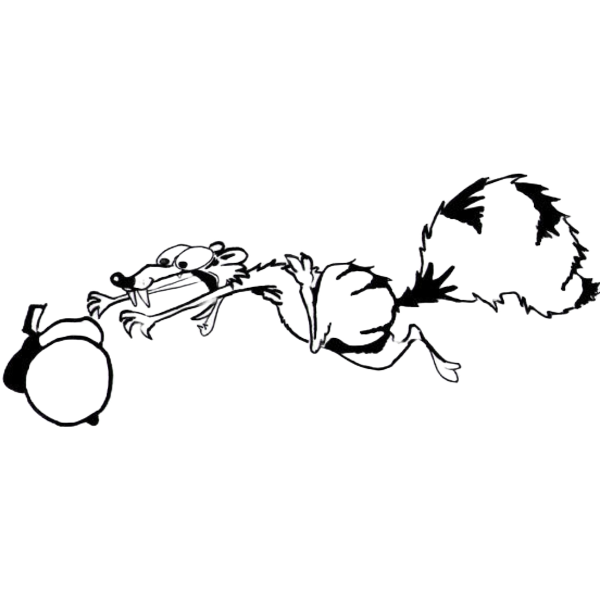

Once Upon a Frame
Home
Movies
About
Error
404 - Oops! Lost your nut?
Looks like Scrat isn’t the only one chasing something that’s gone missing. The page you’re looking for is as elusive as his acorn.
Don’t worry, just like Scrat, you can always try again!
Take Me Home
